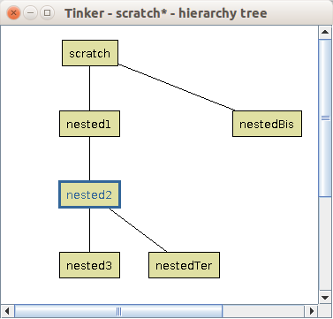
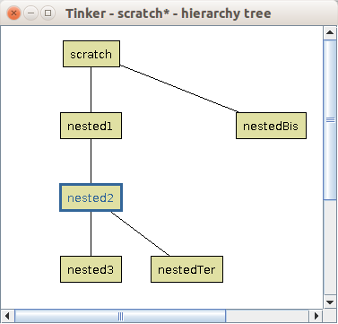

Contents
Getting started
Installation
Download the archive file on the website and extract it.
intalling prover
Under the directory tinkerGUI you will find the files for the GUI :
- tinkerGUI-[version].jar the jar file actually running the GUI (a Java Virtual Machine is necessary to run it) ;
- guiLauncher_[os-version].so/dll a C library allowing the GUI to be launched from a prover ;
- unicodeConfig a Json file listing customisable shortcuts for unicode characters ;
- web app a directory containing template files to build a tinker web application.
To run the GUI the .jar should have the permission to be executed, then a double-click will launched it. Alternatively it can be launched by opening a console and entering the following commands :
$ cd path/to/tinkerGUI
$ java -jar tinker-[version].jar
The interface
Fig.1 Tinker GUI on start (left) and Tinker GUI explained (right).
Figure 1 (left) presents the interface on its startup, i.e. with an empty project. The interface is divided in different parts (see figure 1 right) :
- a menu bar on the top ;
- library panels (one file tree and one preview panel) on the left ;
- a central graph editing area ;
- drawing and evaluation controls on top of the editing area as well as hierarchy utilities ;
- a hierarchical node inspector on the right ;
- an information panel (for node or edges) below.
PSGraph edition
Drawing a graph
Controls

Fig.2 Drawing controls buttons.
On top of the main graph area five drawing modes can be selected :
- the Select mode (
 ) allows you to select a node on the graph, to display its information, move it on the graph (by dragging it) or even edit the tactic it is linked to (double click). You can also select multiple nodes at the same time by dragging a selection box around them or holding the Shift key while clicking on them. This mode can also be selected by pressing the S key ;
) allows you to select a node on the graph, to display its information, move it on the graph (by dragging it) or even edit the tactic it is linked to (double click). You can also select multiple nodes at the same time by dragging a selection box around them or holding the Shift key while clicking on them. This mode can also be selected by pressing the S key ; - the Draw identity tactic mode (
 ) allows you to add an identity tactic node on the graph. This can also be done via the context menu (right-click on a empty area in the graph), selecting the Add an identity node option. This mode can also be selected by pressing the I key ;
) allows you to add an identity tactic node on the graph. This can also be done via the context menu (right-click on a empty area in the graph), selecting the Add an identity node option. This mode can also be selected by pressing the I key ; - the Draw atomic tactic mode (
 ) allows you to add an atomic tactic node on the graph. This can also be done via the context menu (right-click on a empty area in the graph), selecting the Add an atomic tactic node option. This mode can also be selected by pressing the A key ;
) allows you to add an atomic tactic node on the graph. This can also be done via the context menu (right-click on a empty area in the graph), selecting the Add an atomic tactic node option. This mode can also be selected by pressing the A key ; - the Draw graph tactic mode () allows you to add a graph tactic node on the graph. This can also be done via the context menu (right-click on a empty area in the graph), selecting the Add a graph tactic node option. This mode can also be selected by pressing the N key ;
- the Draw edge mode (
 ) allows you to add an edge on the graph. This mode can also be selected by pressing the E key.
) allows you to add an edge on the graph. This mode can also be selected by pressing the E key.
Also note that you can :
- copy and paste nodes using Ctrl+C and Ctrl+V ;
- delete a selected node by pressing the Delete key ;
- undo and redo actions using Ctrl+Z and Ctrl+Shift+Z.
Nodes and tactics


Fig.3 Creating a graph tactic named nested (left) and Confirmation dialog in case a name is already taken (right).
To use a tactic in a psgraph you should first draw a tactic node on the graph area. Drawing an atomic or graph tactic node will launch a dialog where can edit the name of your tactic and, in the case of graph tactics, specify the branching type, i.e. OR or ORELSE (see figure 3 left). In the case that this name is already taken by another tactic of the same type, another dialog will ask your confirmation to link this node with this existing tactic (see figure 3 right).
Each node can also take arguments. To specify arguments insert them between parenthesis after the tactic name. Arguments are linked to nodes therefore for the same tactic A there can be two nodes : one taking an argument x (write A(x) in the name field when creating the tactic) and one taking two arguments y and z (write A(y,z)). Arguments are separated by commas.

Fig.4 Node Information Panel.
You can check the informations of a node by selecting it, these information will appear in the Node Information panel (see figure 4). The informations displayed in this panel will depend on the type of node selected. Also this panel offers a range of actions, again depending on the type of node selected.
To update a tactic name or the arguments used by a node : double click on the node (in selection mode) or right-click on it and select the Edit node option or in the node information panel select the edit icon ( ). A dialog will then appear, similar to the node creation dialog. If a duplicated tactic (i.e. linked to more than one node) is updated, there can be two options : either create an entirely new tactic, or update all the nodes linked to it.
). A dialog will then appear, similar to the node creation dialog. If a duplicated tactic (i.e. linked to more than one node) is updated, there can be two options : either create an entirely new tactic, or update all the nodes linked to it.
You can write a definition for an atomic tactic directly in the GUI (if it is not already done in the core). To do so : open the menu Edit in the menu bar and select Open tactic editor and write your definition. The syntax used to make tactic definition is as follow :
tactic [name] := [definition];
When done, click Submit or close the window.
To delete a node, select it and press the Delete key or click the delete icon in the node information panel (,  or
or  ). This can also be done by right-clicking on the node and select Delete node in the context menu.
). This can also be done by right-clicking on the node and select Delete node in the context menu.
Edges
To draw an edge select the draw edge mode, click on the graph where to start the edge and drag it to its destination. Clicking on a node will start the edge from this node, clicking on an empty space will create a boundary node to start the edge from it. Dragging to a node will set it as the edge destination, dragging to an empty space will create a boundary node and set it as the edge destination.
There are few rules when it comes to drawing edges :
- one cannot draw an edge between two boundary nodes (i.e. between two empty spaces) ;
- one cannot draw an edge to or from a boundary node ;
- one cannot draw an edge to or from a breakpoint ;
- one cannot draw an edge to or from a goal node.
Fig.5 Edge Information panel.
You can view the informations associated with an edge by selecting it and it will appear in the Node information panel (renamed Edge information), along with buttons to edit this edge (see figure 5).
You can modify the source and target of an edge by clicking on the edge next to the node and dragging it to the new source / target. Note That the previous rules about drawing an edge will still apply along with the following rule : one cannot modify the source / target of an edge if this source / target is a breakpoint or a goal node.
Fig.6 Edge update dialog.
To change the goaltype of an edge, double click on the edge or click on the edit icon in the Edge Information panel (). A dialog will then appearwhere the edge goaltype can be edited, along with the id of the source and target nodes (see figure 6). This dialog can also be launched by right-clicking on the edge and selecting the Edit edge option.
To insert a breakpoint on a edge, you can click on the insert breakpoint icon ( ) in the Edge Information panel, or right-click on the edge and select the Add breakpoint option in the context menu. Although it appears that it became two edges with a breakpoint node in between, it is really a single edge, therefore the only option regarding breakpoints on this edge is to remove the one previously created by right-clicking on any part of the edge or the breakpoint and selecting the remove breakpoint option in the context menu, or selecting the edge or the breakpoint and clicking on the remove breakpoint icon (
) in the Edge Information panel, or right-click on the edge and select the Add breakpoint option in the context menu. Although it appears that it became two edges with a breakpoint node in between, it is really a single edge, therefore the only option regarding breakpoints on this edge is to remove the one previously created by right-clicking on any part of the edge or the breakpoint and selecting the remove breakpoint option in the context menu, or selecting the edge or the breakpoint and clicking on the remove breakpoint icon ( ) in the Edge Information panel.
) in the Edge Information panel.
Deleting an edge can be done by selecting it and pressing the Delete key, right-clicking on it and selecting the Delete edge option in the context menu, or clicking on the delete edge icon ( ) in the Edge Information panel.
) in the Edge Information panel.
PSGraphs library
The left side of the interface contains two panels dedicated to a PSGraph library. The purpose of this library is to introduce reusability of psgraphs. This directory will contain many templates that can be easily inserted in your graph.

Fig.7 The Library panels.
Figure 7 presents the panels to make use of this library. On the top a file tree allows you to navigate through it. On the bottom a preview panel will present the psgraph that would have been selected in the file tree. This preview is fully navigable, i.e. any graph tactic in the hierarchy can be inspected (using the dropdown selection) and all their subgraph viewed (using the navigation icons  ).
).
To import a psgraph from the library to the graph area click on the import icon (). The psgraph will then be directly added to your current graph. All the graph tactic that would be present in the psgraph from the library will then be renamed [file name]-[tactic name] (note that an index might be appended in case this name is already taken), and their subgraph imported as well. The atomic tactic will also be imported, if they append to be existing in your psgraph (i.e. if your psgraph contains an atomic tactic with the same name), their definition will be merged, the definition you provided being prioritised.
To use your own psgraphs in the library, simply save them under the folder named tinker_library, that should remain under the same directory as the tinkerGUI-[version].jar file.
Using unicode characters
As the prover from which you are using tinker might be using mathematical symbols (e.g. λ, ∨, →), you might want to use them in the GUI as well (e.g. defining goal types). To do so tinker allows you to define your own shortcuts to write them. In the file named unicodeConfig (which already contains a set of shortcuts), you can edit them in the json format (key-value pair) :
...,
"your_shorcut " : "the_unicode_character_code ",
...
Note that if you wish to start your shorcut with \ it should be escaped, using another \ before. The space after the shortcuts is preferable in order to avoid mixing them. The unicode character code should start with a \u, completed with 4 digits. For example to use the shortcut \implies with → :
... ,
"\\implies " : "\u21D2 ",
...
The characters will be printed as you type them.
Hierarchies
To start using hierarchies in PSGraph you will first need to create a graph tactic. Then you will have to insert a first subgraph in this tactic, to do so : right-click on a node linked to this tactic and select the Add subgraph option in the context menu, you can also click on the add subgraph icon ( ) in the Node Information panel. You will then have an empty subgraph in the graph area, that can be edited.
) in the Node Information panel. You will then have an empty subgraph in the graph area, that can be edited.
 

Fig.8 Hierarchy controls (left) and Hierarchy tree (right).
There are many tools to easily follow on which graph you are actually working on. Figure 8 (left) presents three of them, on top of the graph area :
- the icon
 will open a hierarchy tree window (figure 8 (right)), displaying a tree showing the hierarchy, and highlighting the graph tactic currently edited. Clicks on the tree nodes will switch the currently edited graph tactic ;
will open a hierarchy tree window (figure 8 (right)), displaying a tree showing the hierarchy, and highlighting the graph tactic currently edited. Clicks on the tree nodes will switch the currently edited graph tactic ; - next to this icon are breadcrumbs showing a path, from the root graph tactic to the currently edited graph tactic. All the labels displayed in blue are clickable, and will switch the currently edited graph tactic ;
- finally on the right, icons will help you switch between subgraphs of the same graph tactic ( ), the add icon () will append a new subgraph to the graph tactic, the delete icon (
 ) will remove the currently displayed subgraph, finally the zoom-in/out icons (
) will remove the currently displayed subgraph, finally the zoom-in/out icons (
 ) will increase/decrease the zoom level of the graph.
) will increase/decrease the zoom level of the graph.

Fig.9 Tactic inspector.
If you just need to see what is the subgraphs of a graph tactic, you can use the tactic inspector (see figure 9). From this panel you can select any graph tactic in your psgraph using the dropdown list. Once it is selected, it will display a preview of its subgraph, which can again be change using the navigation icons, the add, delete, zoom-in and zoom-out icons also have the same purpose (note that the add icon will switch the currently edited graph tactic). The edit icon () will switch the currently edited graph tactic, and set the current subgraph to the one you were previewing. Apart from the dropdown list, you can also inspect a graph tactic by selecting a node linked to it, right-click on this node and select the Inspect option in the context menu, or click on the inspect icon ( ) in the Node Information panel.
) in the Node Information panel.
Another way to make hierarchies is to merge nodes on a graph into a graph tactic. To do so, select many nodes (using a selection box or pressing Shift while selecting them), then click the Merge nodes button in the Node Information panel, or the option with the same name in the context menu, once you right-click on them. A dialog will then appear to set up the name of the graph tactic in which those node will be merged.
To set the top-level graph tactic name (its default value is scratch), go to the Edit menu in the menu bar, and select the Change proof name option, which will display a dialog from which you can perform the operation.
PSGraph evaluation
Evaluation setup
To start the evaluation, you will first need to specify a psgraph and goal. This can be done in GUI and/or in the prover.
GUI
Fig.10 Editing a goal in the interface.
If a psgraph has been opened or edited in the GUI, there is nothing else to do regarding it. To specify a goal, you will need to edit it : click on the goal icon ( ) next to the drawing mode icons, on top of the graph. This will trigger a dialog (see figure 10) where you can edit two fields :
) next to the drawing mode icons, on top of the graph. This will trigger a dialog (see figure 10) where you can edit two fields :
- the assumptions you are making ;
- the actual goal.
From there this psgraph and this goal will be used for evaluation, provided that there are not define in the prover. The evaluation protocol will always prioritize the fields specified in the prover. For instance if there are psgraphs define in the prover and in the GUI, the psgraph that will be evaluated is the one in the prover. The same applies for goals.
Prover
todo
Starting the evaluation
Fig.11 Evaluation controls.
The GUI controls for the evaluation are located on top of the graph, see figure 11.
You will first need to instantiate socket ports in the GUI. Click on the connection icon ( ). After that the GUI will enter a listening mode and wait for a connection from the prover.
). After that the GUI will enter a listening mode and wait for a connection from the prover.
todo : eval start on prover
When the connection is established the evaluation protocol will start automatically. The connection icon should be two full arrows ( ), some evaluation options should become available and the psgraph with a first goal on it should be displayed. Check the evaluation log if you do not get the graph you expected, an error might have occur in the initiation process.
), some evaluation options should become available and the psgraph with a first goal on it should be displayed. Check the evaluation log if you do not get the graph you expected, an error might have occur in the initiation process.
Running the evaluation
Evaluation options
The evaluation process is done step by step, for each of them you can choose an evaluation option. Tinker has 9 options :
- next (
 ) : the most common option, will process one goal, the first of the default order or the one that has been selected ;
) : the most common option, will process one goal, the first of the default order or the one that has been selected ; - undo (
 ) : goes back to the state before the last evaluation options was selected ;
) : goes back to the state before the last evaluation options was selected ; - step into (
 ) : if a goal is selected and before a graph tactic, will force the goal to go inside it ;
) : if a goal is selected and before a graph tactic, will force the goal to go inside it ; - step over () : if a goal is selected and before a graph tactic, will ignore the steps inside the graph tactic and directly give its output ;
- finish (
 ) : will automatically run the evaluation until there are no more goals in the current graph tactic ;
) : will automatically run the evaluation until there are no more goals in the current graph tactic ; - backtrack (
 ) : will switch branches in the evaluation ;
) : will switch branches in the evaluation ; - until break (
 ) : will automatically run the evaluation until one goal finds itself on an edge with a breakpoint ;
) : will automatically run the evaluation until one goal finds itself on an edge with a breakpoint ; - complete (
 ) : will automatically run the evaluation until there are no more goals or all remaining goals are on the output edges of the top-level graph ;
) : will automatically run the evaluation until there are no more goals or all remaining goals are on the output edges of the top-level graph ; - stop (
 ) : will stop the evaluation, but keep the connection between the prover and the GUI alive.
) : will stop the evaluation, but keep the connection between the prover and the GUI alive.
If an evaluation has been stopped (with the connection still alive), it can be restarted the same way you started it in the prover.
Evaluation log
Fig.12 Evaluation log.
To follow informations given by the prover on the evaluation (e.g. goal remaining), consult the evaluation log (figure 11). It can be accessed via the Debug menu, selecting the Open eval log window option.
A filter list on the left will allow you to only print the type of information that you want. You can also clear the messages received via the Options menu.
Editing while evaluating
As you might want to correct things while evaluating a psgraph, Tinker allows you to make changes on it without having to stop and restart the evaluation. Although most of the edit option are available, there are restrictions (regarding graph tactics hierarchies mainly).
In any case a message will automatically appear on the top left-hand corner of the graph area informing you that evaluation may not be sound anymore (for instance after update a tactic that has already processed goals). This message will be disable when you stop evaluation.
After changes are made, you will notice that the only option available to you is to push your changes to the prover ( ). If the changes fail on the prover, you will be able to retrieve a working psgraph by pulling it (
). If the changes fail on the prover, you will be able to retrieve a working psgraph by pulling it ( ). Otherwise the proof will continue as normal.
). Otherwise the proof will continue as normal.
Saving and exporting psgraphs
When saving a psgraph for the first time, use the Save as option in the File menu. You will be able to select a directory in which to save the psgraph, as well as a file name. Please note that Tinker will only the extension .psgraph when opening it back.
To save changes on a psgraph you already opened in Tinker, you can use the Save option (again in the File menu), which would rewrite the file from which it was opened from. This option is also accessible using the Ctrl+s shortcut.
You can open a psgraph from Tinker using the Open option in the File menu. Note that this will overwrite the psgraph you were probably working, therefore you should make sure it is saved before-hand. You can also access the previous psgraphs you were working on quickly, in the Recent files submenu.
Tinker also allows you to export the current graph in a SVG image file, select the Export in SVG option. It will trigger a save dialog, from which you can select the destination file.
Web application
In order to easily present your proof to a larger audience, Tinker allows you to perform recordings on a psgraph edition an evaluation, recordings which can then be visualized via a dedicated web application.
Recordings
All of the recording action are made through the Recording menu in the menu bar. The following steps explain how to perform a recording :
- you will first need to select on which file to perform the recordings : select the Set up file for recording option, and using the triggered dialog, choose a directory and file name (records will be made on json files) ;
- once the file is correctly setted up, you will be able to start your recording, select the Start recording option, this will start writing on a file by taking a snapshot of the current psgraph ;
- from then every action modifying the psgraph (an edit action or an evaluation step) will append the new model in the file ;
- you can pause the recording by selecting the Pause recording option, no modification will then be recorded in the file ;
- at any moment the recording can be resumed, by selecting the Resume recording option ;
- when the recording is being paused, you can set up a new file on which to record.
The resulting json file can then be read by the web application.
Generating the web application
If you wish to host the web application on your own website, you can generate the needed HTML, CSS and JavaScript files from the desktop GUI. Select the Generate web app option in the Recording menu and choose a directory in which to copy the files. The default name of the HTML file is index.html, make sure no file with the same name are in the same directory. If the files were directly copied on a server, the web application should be accessible through the following address :
yourDomainName[:thePortNumber]/path/to/the/webApp/
Using the web application
The generated web application should contain a directory named records. This directory is meant to receive the recording files you previously created. They can then be accessed through the web application by appending ?fileName to the URL.
For example you generated the web application and copied it in your server, in a directory named tinker. Assuming your server is at the address mydomain.com, to access the web application, you will need to enter the following URL in a web browser :
myDomain.com/tinker
Now you made a recording of your proof in a file named myRecording1.json. To make it accessible directly from the web application, copy the recording file into the records directory in the web application. From now, myRecording1.json can be visualise via the web application by entering the following URL :
myDomain.com/tinker?myRecording1
You can also directly access a certain step in the proof recording by appending the step number (starting with 0) as follow :
myDomain.com/tinker?myRecording1#3

Fig.13 File upload on the web application
If you do not wish to host recordings, local files can be loaded from the main page. This can also be done if cannot host the web application on a server, in that case you can use our website : ggrov.github.io/tinker/tinkerViz. Press the choose file button and select the file to load (see figure 13).
Fig.14 The web application.
Figure 14 presents the web application interface. The main part is the graph itself, that can be scaled and dragged. All of its nodes are also draggable and the goal and moving the mouse over goal and tactic nodes will display informations about them.
Directly on top of the graph, on the left-hand side, the evaluation path (i.e. the path to the graph that was being evaluated or edited during recording) is shown. On the right-hand side, a drop-down list allows you to access all the graph tactics in the proof, and navigation buttons will enable you to go through all the subgraphs.